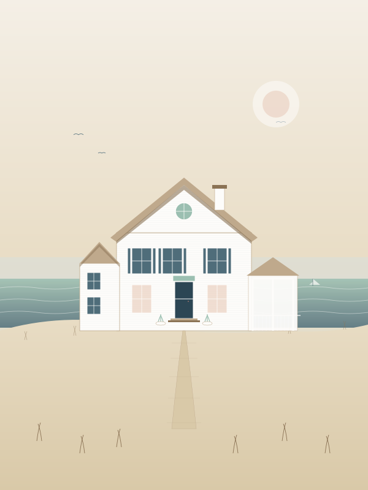
A concept plan for a small-scale architectural model, designed and drawn by Ashleigh. Not a construction document — a love letter to a home.
This digital download is licensed to one individual for personal, non-commercial use. You are warmly invited to build, finish, photograph, and gift the model you make from these plans. Please do not redistribute, resell, or reproduce the document or its drawings in whole or in part. Tagging @justmeashleigh when you share your finished build will absolutely make her day.
Commercial licenses (kits, classroom use, retail) are available — write to hello@justmeashleigh.com.
© Ashleigh / Just Me Ashleigh. All rights reserved. All drawings, illustrations, and text in this document are original works.
I'm in my final year of architecture school, which means I've spent the last four years thinking about buildings I cannot yet afford to build. So I started drawing them anyway.
This is the first plan in a small collection I'm calling the Dream House Atelier. Each one is a complete concept for a model house — an HGTV Dream Home, in miniature, that you build with your own two hands at your own kitchen table. None of them are construction-ready. None of them are full of structural callouts and code references. They're all just houses I would love to live in, drawn carefully enough that you can love them too.
The Saltwater Cottage is where I'd want to spend a long August. I built her around a wraparound porch, a vaulted great room that opens to the ocean, and a bunk room with a porthole window where four kids can stack into bed at the end of a sandy day. There's a widow's walk, because every coastal cottage deserves one. There's a Dutch door, because what is more inviting than a Dutch door.
The model is meant to be made from foam board and balsa wood — supplies you can pick up at any craft store. I've designed it for an intermediate hobbyist, which means I assume you've held a craft knife before but not that you've ever built a house. I'll walk with you through every step.
Take your time. Make it yours. Send me a photo when you're done.
— Ash
Ashleigh · the dream house atelier · spring
A small atelier of dream house concept plans. Drawn, written, and stitched together by one person at a kitchen table.
Architecture school teaches you to draw buildings other people will pay to build. The Atelier flips that around: it sells the dream. Each plan is a complete concept for a small architectural model that anyone can build by hand — a tactile way to spend an afternoon (or a winter) inside a house that doesn't exist yet, may never exist, but feels like home.
A 60-page printable PDF. A complete materials list, every cut sheet, every step. Drawings done by hand. A point of view about how the house wants to be lived in. No flat-pack kit, no shipping, no waiting — just the plans, the inspiration, and the trust that you can do it.
Anyone who's ever lingered on a real estate listing they couldn't quite afford. Anyone redecorating in their head. Anyone who needs a long winter project. Architecture students. Designers. Crafters. Grandparents and grandkids. People who love houses.
@justmeashleigh
justmeashleigh.com
hello@justmeashleigh.com
Sixty pages, seven chapters, one cottage.
Read it cover to cover before you cut a single thing. The book is your project plan as much as your instruction manual.
Chapters I–III are the dream — the design intent, the rooms, the way the house wants to feel. Read these like a magazine. Chapter IV walks you through your shopping list. Chapter V is your cut sheets. Chapter VI is your build, broken into eight phases of one to three afternoons each. Chapter VII is for after.
Templates live on pages 43–46. Print them at 100% scale, no fit-to-page. Every template page includes a 6" calibration ruler at the top — check it with a real ruler before you cut.
Everything is drawn at 1:48 — meaning ¼" on the model equals 1 foot in the real house. The finished cottage measures about 11.5" wide by 8.5" deep by 7.25" tall to the widow's walk railing. It will fit on a generous bookshelf.
Plan for about 30–40 hours of build time, spread across two to six weeks. Most of that is patience — letting glue dry, letting paint cure, letting yourself enjoy the slow build of something nice.
This plan assumes you've used a craft knife before. If you haven't, that's fine — please buy a self-healing mat and a fresh package of #11 blades, watch one ten-minute video on technique, and you'll be ready.
Change the colors. Swap the shingles for clapboard. Add a third dormer. Build her in pink. The plan is a starting point — your house is meant to look like you.
Where we live in this house before we build it. The mood. The light. The smell of salt on cedar shingles. The dream is the deliverable — everything that follows is just service to it.
A modest, four-bedroom shingled cottage of about 2,200 square feet, sited end-on to a 0.4-acre coastal lot. The footprint is simple. The roof is dramatic. The ocean is everywhere — visible from the great room, the primary suite, and the daybed on the screened porch where you'll fall asleep on rainy afternoons.
A simple gabled rectangle with two attached wings — a mudroom on the west and a screened porch on the east. A single dramatic gable rises in the center, capped by a widow's walk and a chimney just off-axis.
A 60-foot wraparound porch on the south. A 240-square-foot screened porch on the east. A back deck and unfinished pergola on the north, where the ocean is. The house is built around its thresholds.
Three oversized 9-over-9 windows on the north elevation pull the ocean into the great room. The primary suite has a window seat. Every bedroom gets morning sun.
The Saltwater Cottage is a love letter to the shingled vernacular of the American Northeast — but a small, careful one, with the volume turned down.
For the cedar shingles weathered to driftwood silver. For the white trim that stays bright even when the siding goes grey. For the way the porches turn corners.
For the steep gable, for the dormers along the roofline, and for the modest scale. This is not a Hamptons mansion — it's the cottage at the end of the road.
For the way the house sits on the dune. For the unpainted pergola. For the indoor-outdoor casualness. For the Dutch doors.
Textures and finishes, gathered.
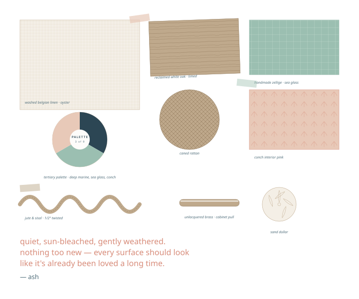
Nine colors, used everywhere. Restraint is the whole point.
Paint codes are suggestions matched to common American manufacturers. For your model, any acrylic craft paint in similar tone will do beautifully — see page 38.
A material palette for the imaginary full-scale house — and the model proxies that stand in for them.
| Element | Real material | Model proxy | Page |
|---|---|---|---|
| Exterior siding | White-painted cedar clapboard, 4" reveal | 3⁄16" white foam board with scored siding lines | 43, 54 |
| Roof | Western red cedar shingles, weathered grey | Tinted craft cardstock cut into 6mm strips | 45, 54 |
| Trim | Painted cedar, 5⁄4 stock | 1⁄16" × 1⁄8" balsa wood, painted Foam White | 46, 53 |
| Windows | True-divided-lite, 6-over-6 wood sash | Acetate sheet behind printed mullion overlays | 46, 53 |
| Front door | Painted Dutch door · Deep Marine | Layered balsa, painted, with brass-pin hardware | 46, 53 |
| Porch decking | Painted tongue-and-groove cedar | 1⁄16" balsa cut in 4mm strips, scored | 44, 56 |
| Foundation | Cast concrete with brick veneer skirt | Textured craft paper or thin cardstock | 44, 49 |
| Chimney | Painted-brick masonry | Foam board faced with embossed brick paper | 45, 52 |
| Pergola | Reclaimed Douglas fir, unfinished | 3⁄32" basswood, lightly stained | 44, 56 |
| Landscape grasses | Beach grass, sea oats, lavender | Static grass + dried bouquet trimmings | 39, 56 |
| Sand & path | Crushed shell & sand | Fine play sand glued to base | 39, 49 |
| Interior floors | Wide-plank limed white oak | 1⁄32" balsa cut into 8mm planks, dry-brushed | 44, 55 |
A 0.4-acre coastal lot with 60 feet of shoreline. The road comes in from the south; the house sits end-on so its long flank faces the ocean.
About 120 feet wide along the shore road, 145 feet deep down to the dune. Almost flat, with a gentle 18" rise from road to house. The lot is a peninsula of beach grass between two older cottages.
The house is oriented with its long ocean-facing wall to the north — counterintuitive for a vacation cottage, but right for this site, because that's where the view is. The wraparound porch on the south side catches the sun. The screened porch on the east catches morning light.
A curved crushed-shell drive arrives from the southeast and turns toward the cottage's east side, so guests can park out of sight from the porch and walk in.
Almost no lawn. Native beach grasses, sea oats, lavender, salvia, hydrangea around the porch, and three small ornamental crab apples to give the lot scale. A path of crushed shell leads from the back deck through the dune to the beach.
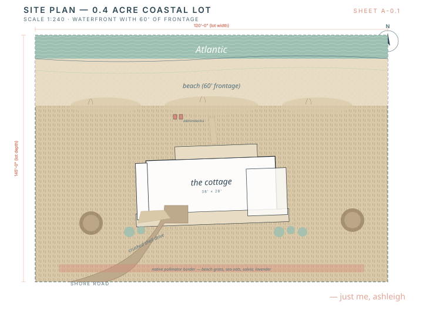
The site plan in full appears on page 16 of Chapter II.
How the cottage wants to be lived in. Not a brief — a story. The architecture is in service of all of this.
6:42 a.m.
The sea fog is still on the water. You come down the stair barefoot, push the bottom half of the Dutch door open, and let coffee steam meet salt air on the wraparound porch. The dog comes too.
9:15 a.m.
The four kids have been in the bunk room since five and now they're all four on the kitchen island stools eating cereal in shifts. The pendants are on. The Dutch door is open. The screen door slams a lot. Nobody minds.
11:30 a.m.
The crushed shell path is full of bare feet going down to the beach. Sandy towels collect in the mudroom. The washer is already running.
2:00 p.m.
It rains. Hard. Three of the kids fall asleep on the screened porch daybed. The fourth reads on the great room sectional under the vaulted ceiling. You make tea.
7:30 p.m.
You eat outside on the back deck under the pergola. There are striped sailors candles and a centerpiece of hydrangeas the children cut from the porch beds. The grill is going. The ocean is silver.
10:00 p.m.
You climb the ladder to the widow's walk with a glass of wine and watch the lighthouse blink in the distance. The roof shingles are still warm from the day. The house is dark below you except for the lamp in the bunk room, where someone is reading too late again.
Plans, elevations, section, roof, site. Seven drawings, drawn by hand. Everything you need to understand the cottage before you start cutting it.
0.4-acre coastal lot, scale 1:240. Building footprint shown solid, eave overhangs dashed.
38'-0" × 28'-0" footprint. Great room vaulted to the ridge. Wraparound porch full south elevation. Screened porch on east.
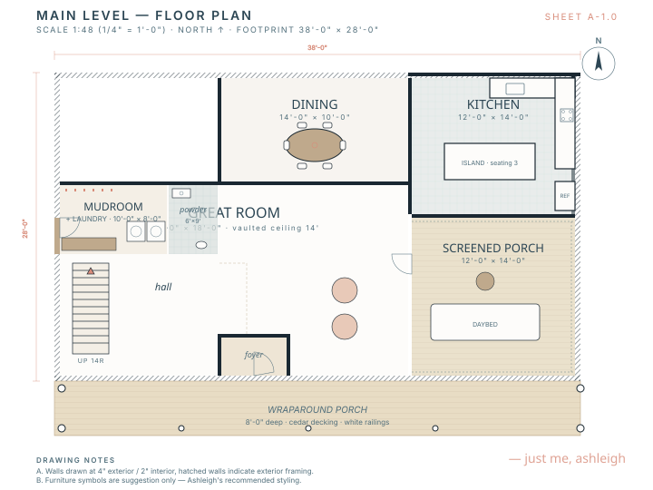
Three bedrooms, two baths, hallway overlook to the great room below. Widow's walk accessed via ladder hatch.
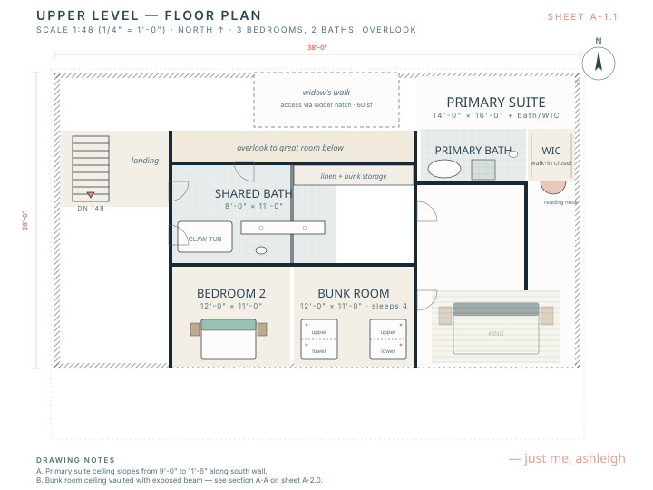
Overall height 28'-6" to ridge. Symmetry broken at left by mudroom wing and at right by screened porch wing — both intentional.
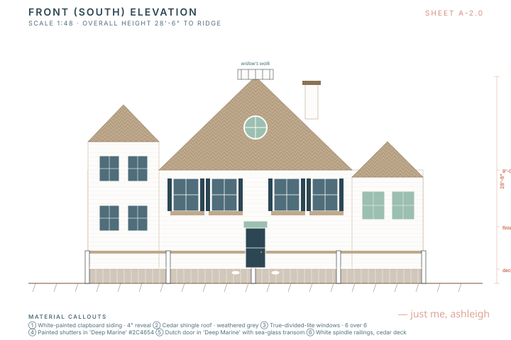
Glazing concentrated here: three oversized 9-over-9 windows above, three pairs of French doors below to the back deck.
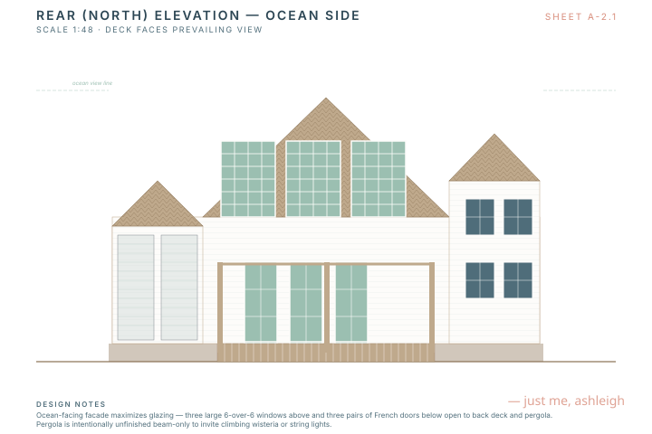
Through dining, great room, and kitchen showing vaulted ceiling, exposed beams, and upper level overlook.
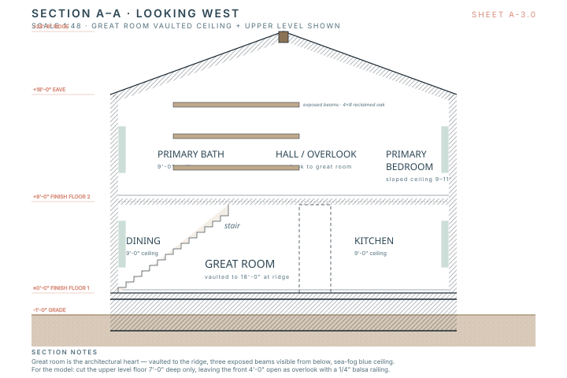
Main gable 10:12 pitch. Wing gables 10:12. Screened porch hipped at 8:12. Three shed dormers along the front facade.
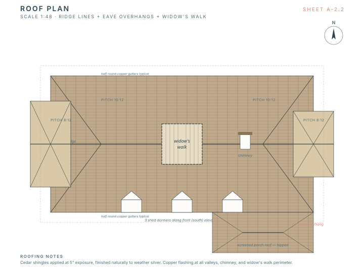
A walk through the cottage, room by room. Each spread captures the intent: the materials, the moment of day, the lived-in feeling we're after. Style notes are recommendations — yours to obey or ignore.
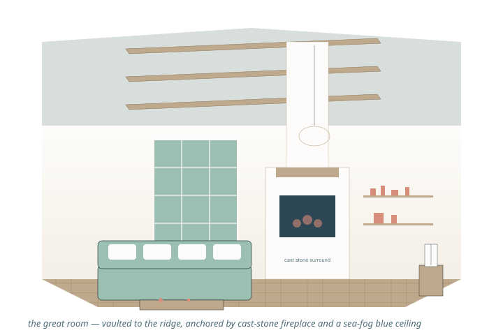
Vaulted to the ridge of the main gable — 18 feet of air. Three reclaimed-oak beams cross at 4'-0", 8'-0", and 12'-0". The ceiling between is painted Sea Fog. Walls are Foam White board-and-batten to the eave line. A cast-stone fireplace anchors the east wall; ocean-facing windows fill the north wall.
Big enough for everyone, soft enough to nap in. The sectional should swallow people. The rug should be old.
Vault the ceiling by leaving the upper-level floor short at the front of the model — see the cut on page 51 (Phase 3). The ceiling above the great room is one piece of Sea Fog painted cardstock glued to the underside of the roof slopes.
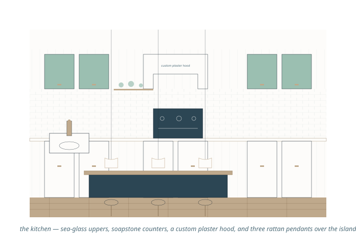
12'-0" × 14'-0", open to the great room over a half-wall. Custom plaster range hood, apron-front sink under the north window, walk-in pantry tucked behind the fridge wall. A 10-foot island runs parallel to the south wall and seats three on the porch side.
Working kitchen with summer-house ease. Beachgoers should be able to make a sandwich without taking off their towels.
The island, hood, and cabinets are little balsa boxes painted in the palette. Use a Sharpie-fine line to suggest cabinet doors. The brass pulls are tiny snipped headpins or wire stubs glued on.
Not a separate room — a defined moment, west of the great room, lit by a row of three windows and one big pendant. The table is round and seats six tight or eight friendly.
14'-0" × 10'-0", open to the great room with a wide cased opening. One west-facing window catches the sunset. A built-in bar cabinet on the north wall hides itself in Foam White.
The first meal of the season is here. The last meal of the season is here. Most weekday meals are at the kitchen island — but Sunday lunch is here, and so is every birthday.
Cut the round table from a dowel slice. Chairs are tiny scratch-built balsa with cardstock cane (use brown craft paper, hatch with Sharpie). The pendant is a half-sphere of cardstock painted Driftwood.
First room in, last room out. The hardest-working ten-by-eight in the cottage.
10'-0" × 8'-0" west wing. Two windows look out at the hydrangea border. A 6-foot built-in bench with bins below and hooks above. Washer and dryer stacked behind a folding screen. A utility sink under the window for sandy buckets.
This is a small room, so detail it lightly: paint the bench, draw the bins, add hooks as snipped headpins. Don't try to model the washer/dryer — leave the screen up.
A 6'-0" × 9'-0" room with one job — to be the most surprising space in the cottage. Go bold here. There is no risk: it's a powder room.
Tucked under the front staircase. One small window high on the wall. Vintage console sink, brass faucet, mirrored sconces, and walls papered floor-to-ceiling in a coral-and-cream botanical print. Wainscoting in Foam White to chair height.
Paper the walls with a scrap of pretty wrapping paper or wallpaper sample (your secret weapon — 1:48 wallpaper is just normal pattern). The sink is a wire-and-cardstock console; the mirror is a foil-tape oval framed in painted balsa.
Wallpaper the ceiling too. Trust.
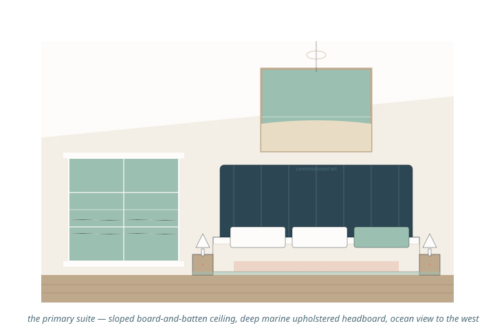
14'-0" × 16'-0", east end of the upper level. Ceiling slopes from 9'-0" at the corridor to 11'-6" along the south wall. A north-facing 60"-wide picture window frames the ocean from bed. A reading nook in the southeast corner.
Sloped ceiling is one of the satisfying details — built from a single piece of foam scored and folded. The picture window is a single piece of acetate behind a balsa frame.
A small bath with a serious soaking tub — because the primary suite is for the people who want to be in the water even when they're inside.
116-square-foot footprint with the walk-in closet borrowed alongside. A freestanding soaking tub under the north window. Curbless tile shower with a sea-glass mosaic floor. Single white-oak vanity, double brass faucets, brass-framed mirror above.
The tub is the focal point — carve from a small block of basswood or scratchbuild from foam and a paint-over. The shower curb is a half-millimeter strip of balsa.
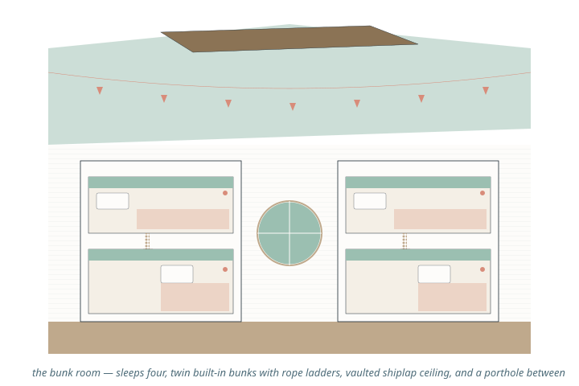
12'-0" × 11'-0", front-east corner of upper level. Vaulted shiplap ceiling. Built-in twin bunks on opposite walls. Between them, a single round porthole window facing the porch roof — every kid's favorite window in the cottage.
Two simple balsa-stick frames glued to the side walls, painted Foam White. Sea Glass bands at the headboards, Conch Pink throws at the foot. Tiny rope ladders are jute twine pleated through balsa rungs. The porthole is a brass washer with acetate behind.
The guest room and the bath everyone shares — designed to feel like the loveliest part of a small inn.
The grown-up guest room. Queen bed, two Driftwood nightstands, a Sand-painted writing desk under the window, a single Conch Pink reading chair. Walls in Sand, trim in Foam White. A vintage marine map of the local sound over the headboard. One striped wool rug.
A wide, generous bath shared by the bunk room and bedroom two. Claw-foot tub with a shower wand. Double Carrara vanity with brass faucets. Penny-round tile floor. Vintage signal pennants strung above the mirror — a small wink at the kids.
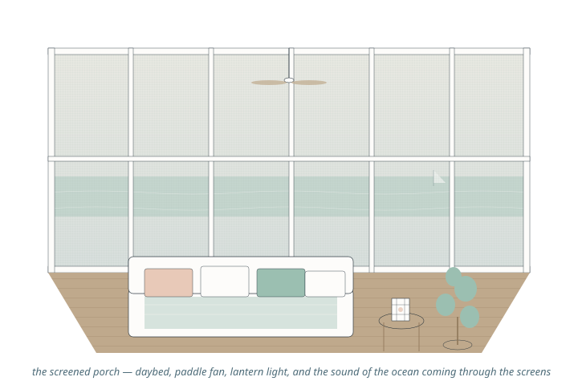
12'-0" × 14'-0" east wing, hipped roof, screened on three sides. A built-in daybed along the south wall doubles as overflow sleeping. Floor is painted tongue-and-groove cedar in Foam White. Ceiling is left raw cedar planking.
This is the showy little room — model it openly with all four walls "screened" using fine craft tulle or vellum stretched across the openings. The daybed is balsa with a tiny linen cushion.
Three outdoor rooms that work hardest of any. The house is built around them.
Stretches across the north of the house, accessed from the great room via three pairs of French doors. Painted cedar in Foam White. Two big planters with hydrangeas. A long teak table that seats ten.
Model: 1/16" balsa planking glued to a foam-board sub-deck. Paint white with watered-down primer for a sun-bleached look.
Spans the deck with 8 × 8 cedar posts and 4 × 6 rafters. Intentionally unstained — meant to weather and to accept climbing wisteria within five years. String lights run along it.
Model: 1/8" basswood square stock, glued at right angles, lightly washed with a grey wash.
A small flat platform at the ridge, accessed via a ladder hatch from the upper hallway. Painted railings, four corner posts. Big enough for two chairs and a small table. Sized for sunsets.
Model: a cap of foam board glued at the ridge with a balsa railing on all four sides.
Everything you'll need to shop for, sourced from craft stores you already know. No specialty kits, no shipping, no waiting. Budget is roughly $85–$140 USD all-in.
Everything fits in a shoebox. If you've ever wrapped a present, you already own most of it.
| Tool | For | Notes | Qty |
|---|---|---|---|
| Self-healing cutting mat (12" × 18" min.) | Cutting · scoring · measuring | Bigger is better. A2 (18" × 24") is ideal. | 1 |
| Craft knife (X-Acto or equivalent) | All cutting | Brand doesn't matter. The blade does. | 1 |
| #11 blades, fresh pack | Cutting | Change every ~30 cuts. Dull blades crush foam. | pack of 10 |
| Metal ruler, 12" | Cutting straight lines | Cork-backed is best — won't slip. | 1 |
| Metal ruler, 18" | Cutting long walls | Optional but lovely. | 1 |
| Architect's scale | Verifying templates | Get the cheap plastic one. Adequate. | 1 |
| Pencil + soft eraser | Marking | 0.5 mm mechanical, HB lead. | — |
| Bone folder / scoring tool | Score-and-fold walls | A butter knife works in a pinch. | 1 |
| Tweezers (fine point) | Tiny trim work | Cosmetic-grade. Lifesaver. | 1 |
| Small clamps or clothespins | Holding while glue dries | 20+ wooden clothespins. | 20 |
| Sanding sponge (fine grit) | Smoothing balsa edges | Or 400 grit sandpaper. | 1 |
| Small brushes (round, sizes 0, 2, 6) | Painting | Synthetic. Cheap is fine. | 3 |
| Wide flat brush (¾") | Walls and broad surfaces | — | 1 |
| Painter's tape, ¼" + ½" | Masking | — | 1 of each |
| Toothpicks | Glue application | Pack of 250. | — |
| Cup for water | Painting | Two cups, actually. Trust me. | 2 |
Everything that holds the cottage up. Buy 20% extra of any sheet good — mistakes are part of it.
| Material | Spec | Quantity | Notes | SKU hint |
|---|---|---|---|---|
| Foam board, white, 3⁄16" | 20" × 30" sheet | 3 sheets | Walls + roof + base | ELMERS-9501 |
| Foam board, white, 1⁄8" | 11" × 14" sheet | 2 sheets | Interior partitions, upper floor | ELMERS-9011 |
| Chipboard or matboard | 11" × 14" sheet | 1 sheet | Stiffening base layer | CRESCENT-99 |
| Balsa wood plank | 3⁄32" × 3" × 36" | 3 sticks | Roof underlayment, deck | SIG-BHS3036 |
| Balsa wood stick | 1⁄16" × 1⁄8" × 36" | 10 sticks | Trim, mullions, railings | SIG-BWS18 |
| Balsa wood stick | 1⁄8" × 1⁄8" × 36" | 6 sticks | Porch posts, beams | SIG-BWS28 |
| Basswood square stock | 1⁄4" × 1⁄4" × 24" | 4 sticks | Pergola posts, chimney | MIDWEST-4044 |
| Basswood plank | 1⁄32" × 3" × 24" | 2 sticks | Floors (limed oak) | MIDWEST-4014 |
| Dowel, hardwood | 1⁄2" × 12" | 1 | Round dining table | DOWEL-050 |
| Wood glue, white | 4 oz bottle | 1 | Aliphatic, fast-setting | TITEBOND-1 |
| Tacky craft glue | 4 oz bottle | 1 | For fabric, paper, soft assembly | ALEENES-T |
| Foam-safe spray adhesive | 3 oz can | 1 | For sheet lamination | 3M-77-LIGHT |
| Hot glue gun + glue sticks | Mini gun | 1 | Quick tacks, landscape | — |
Estimated structural materials cost: $32–$48 USD at any large craft retailer (Michaels, Hobby Lobby, Joann, or a real model-train shop). Order ~20% extra on anything you'll cut more than five of.
Paint, paper, fabric, fixtures. Where the cottage starts to look like the cottage.
| Material | Spec | Qty | For |
|---|---|---|---|
| Craft acrylic — Foam White | 2 oz bottle (e.g. DecoArt White Wash) | 2 | Walls, trim, fireplace |
| Craft acrylic — Sand | 2 oz (e.g. DecoArt Sand) | 1 | Bedrooms, foundation skirt |
| Craft acrylic — Sea Fog | 2 oz (e.g. DecoArt Light Sage) | 1 | Great room ceiling |
| Craft acrylic — Sea Glass | 2 oz (e.g. DecoArt Mint Julep) | 1 | Kitchen uppers, shutters |
| Craft acrylic — Deep Marine | 2 oz (e.g. DecoArt Deep Midnight Blue) | 1 | Front door, headboard, island |
| Craft acrylic — Driftwood | 2 oz (e.g. DecoArt Mississippi Mud) | 1 | Beams, tables, deck |
| Craft acrylic — Conch Pink | 2 oz (e.g. DecoArt Vintage Pink) | 1 | Accent chairs, powder room |
| Craft acrylic — Coral Bloom | 2 oz (e.g. DecoArt Coral Cloud) | 1 | Hooks, planter trim |
| Matte clear finish | 2 oz spray, water-based | 1 | Sealing painted surfaces |
| Acetate sheet, clear | 8.5" × 11", 5 mil | 2 | Window glazing |
| Brass-finish wire | 22-gauge, 5 ft | 1 spool | Hardware, mullions, hooks |
| Cardstock, white | 110 lb, 8.5×11 | 5 sheets | Shingles, ceiling panels |
| Cardstock, kraft/tan | 8.5×11 | 3 sheets | Floors, beadboard |
| Decorative paper / wallpaper | 4×6 swatch | 2 patterns | Powder room, art |
| Linen fabric scrap | 4×4" | 3 colors | Bedding, cushions, throws |
| Cotton ticking stripe scrap | 4×4" | 1 | Pillows, runners |
| Jute twine, fine | 2 mm × 10 ft | 1 | Rope ladders, hooks |
| Black fine-tip marker (Micron 005) | — | 1 | Cabinet lines, mullions |
Estimated finishes cost: $38–$60 USD. The eight craft-paint colors are the foundation — every other paint job in the cottage is a mix of these.
A small bag of beach. A small bag of grass. A surprising amount of difference.
| Material | Spec | Qty | For |
|---|---|---|---|
| Play sand, fine | Pet store or craft store | 1 cup | Beach, paths, mudroom dusting |
| Static grass, light beach (4–6mm) | Model railroad supply | 1 shaker | Lawn, dune grass |
| Lichen / clump foliage, light green | Model railroad supply | 1 bag | Hydrangeas, ornamentals |
| Crushed shell (or aquarium gravel) | Fine | 1/2 cup | Driveway, path edges |
| Dried baby's breath / yarrow | Floral aisle | 1 small bunch | Sea oats, dune grass |
| Small beads (3mm white + pink + green) | Bead aisle | 1 vial each | Hydrangea blossom heads |
| Fine moss, dried | Floral aisle | 1 small bag | Landscape detail |
| Brass jewelry findings (washers, headpins) | — | small pack | Hardware, sconces, porthole frames |
| Black headpins (1/2" length) | — | small pack | Cabinet pulls (painted brass) |
| Mini LED string (warm white, battery) | 20 LEDs, 3 ft | 1 set | Display lighting (Chapter VII) |
| Plastic mini Adirondack chairs (optional) | 1:48 scale | 2 | Beach styling |
| Toy sailboat, 1" length | 1:48 scale, optional | 1 | Display detail offshore |
Estimated landscape + details cost: $18–$30 USD. Many of these are tiny portions of larger packs — you'll have plenty left over for future builds.
A short list of where to actually go, in priority order. None of this requires a specialty model-train shop, though if you have one nearby, lucky you.
Michaels, Joann Fabric, or Hobby Lobby will cover 80% of this list — foam board, balsa, all paints, brushes, glues, jute, sand, lichen, beads, fabric scraps. Bring this book; check off as you go.
Time: about 45 minutes. Coupons exist; use them.
For the cutting mat (if not at the craft store), a fresh #11 blade pack, a good metal ruler, and painter's tape. Also: dowels, fine wire, and any tiny finishing nails you might fancy.
If there's one within driving distance, it's where to get proper static grass, fine lichen, scale figures (for scale photographs), and beautiful weathering powders. Skip if not — substitutes work.
Acetate from gift packaging. Cardstock from old greeting cards. A scrap of linen from a worn-out napkin. A jute coaster you cut up. Look around before you buy.
Fine sand. Three tiny shells. A piece of sea glass for the porch coffee table. Take less than you think you need.
If you have to order: Sig Manufacturing for balsa, DecoArt for paint, Woodland Scenics for landscape supplies, Etsy for vintage wallpaper scraps. (None of these are sponsors. They're just what I use.)
The cut sheets. Print at 100% scale, lay over your material, trace, and cut. Calibration ruler on every page — check it with a real ruler before you begin.
Two important rules and one trick.
In your print dialog, find "Actual Size" or "100%" — never "Fit to Page" or "Shrink Oversized Pages." If your printer asks about margins, accept the default. Some pages are large; they will print across two A4 sheets and need to be taped together at the crop mark.
Set printer to highest quality so the small score-lines stay visible.Every template page has a 6" calibration ruler. After printing, lay a real ruler against it. If it measures less than 6", your printer scaled the page down — reprint with scaling corrected. A 1% scaling error is barely visible; 5% will make your roof not fit.
If the ruler is off by a known percentage, ask your printer dialog for that percentage of scale-up.The trick most people miss: don't cut your foam through the template. Instead, lay the printed template on your foam, push pin pricks through every corner and every cutout into the foam, and then connect the dots with a metal ruler on the foam itself. Cleaner cuts, reusable templates, no torn paper.
Use a fine T-pin or thumb-tack. A pencil prick works too.The moment you cut a wall, write its letter on it (A, B, C, etc.) on what will be the inside. You will not remember which wall is which once they're all sitting on your table.
Print at 100%. Score lines dashed. Cutouts shown coral.
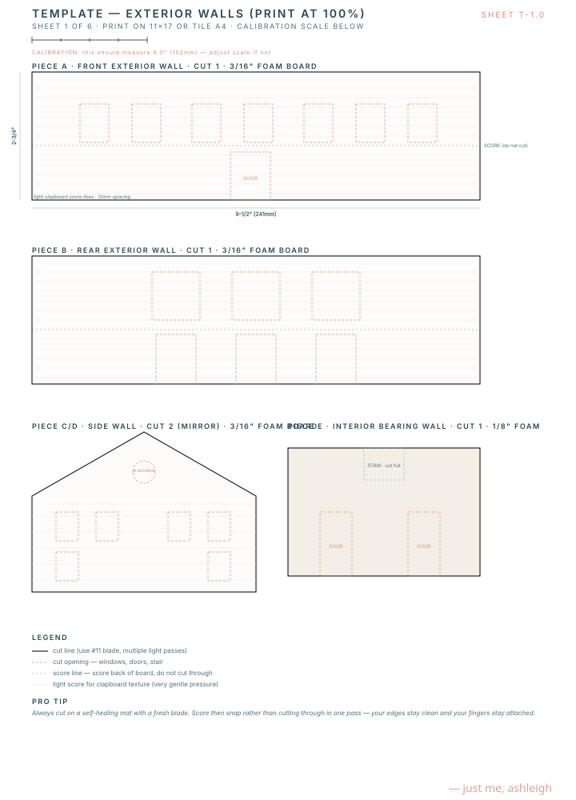
Three cuts: a chipboard base, a foam main-level slab, a foam upper-level slab with overlook opening.
Four main panels, two dormer panels, three small wing panels. All cut from 3⁄16" foam, faced with shingled cardstock after assembly.
Cut the muntin overlays from cardstock and the trim from 1⁄16" × 1⁄8" balsa.
Eight phases, two to six weeks total. Each phase takes one to three good evenings. Don't rush. Don't skip the drying time. The order matters — follow it.
Spend the first evening setting up. The build goes twice as fast in a clean, well-lit space you don't have to break down between sessions.
A 24" × 36" workspace minimum — a dining table is fine if you can dedicate it for a few weeks, otherwise a sheet of plywood you can slide under the couch. Cover with the cutting mat in the center and a piece of butcher paper around it for paint protection.
One overhead bright light + one task lamp at low angle. The low angle makes pencil lines and score marks legible — without it, you will cut the wrong line at least once.
Lay everything out and group by phase. Shoeboxes work; cookie tins are better. One box per phase, labeled in pencil.
Lay all the balsa flat in one place — it warps if it lives upright in a drafty cup.Print all four template pages now (43–46) and check the calibration. Don't wait until you need them — printers reliably fail at the worst moment.
The cottage looks best when walls are painted before assembly. Paint Foam White on every interior face and Foam White on the exterior. Let dry overnight before any cutting of detail openings. Color and texture come later.
Page 4 has the axonometric. Print page 4 in color, tape it to your wall. You'll glance at it 200 times.
A flat, sturdy 12" × 9" base that everything else gets glued to. The foundation skirt is purely cosmetic but worth doing now.
Use template T-2 to mark and cut a 12" × 9" chipboard rectangle. This is the ground. Set aside.
From 1⁄8" foam, cut a 9.5" × 7.0" rectangle. This is the first-floor footprint and will sit centered on the base.
A separate 2.5" × 2.75" piece, also 1⁄8" foam, sits to the east of Piece G at the same height. Tack-glue it 1mm away from Piece G to suggest the architectural separation.
Use a thin bead of wood glue around the perimeter and a few X-shaped beads in the interior. Set heavy books on top for 20 minutes.
Center the slab so that there's about 1.25" of base showing on the front (south) and 1.0" on the north — this is your porch and deck zone.Cut a 1⁄2"-tall strip of cardstock long enough to wrap the perimeter of the slab. Paint Sand color. Glue around the slab edge so the bottom sits on the base and the top sits flush with the floor.
With a sharp pencil, lightly outline where each wall will go (see floor plan, page 17). This is your roadmap for Phase 2.
All four exterior walls and the interior bearing wall. Don't glue them down until everything is cut, painted, and dry-fit successfully.
Use template T-1. Wall A is the front, B the rear, C and D the mirror sides. Cut window and door openings now — push the pin marks through to the foam before cutting.
For round windows: drill a small starting hole with the awl, then cut outward with a fresh blade in tiny arcs.This wall separates the great room from the dining and kitchen. Cut the stair opening (full-thickness through-cut) and two door openings.
A few passes with the fine sanding sponge — the foam edges will be feathery and you want crisp lines.
Lay each wall interior-side up. Paint with two thin coats of Foam White (great room walls), Sand (bedroom walls), or Sea Fog (kitchen accent wall). See your room palette notes. Let cure overnight.
Use the bone folder and metal ruler. Score horizontal lines every 1⁄8" up the wall. Press firmly — you want a visible indent but not a cut through.
Stand them up, tape the corners, walk around, look at it. Adjust any tight spots. Take a photo. Sleep on it.
One wall at a time. Run a thin bead of wood glue along the bottom edge and corner where it meets the adjacent wall. Hold for 60 seconds, brace with bookends or clothespins overnight.
Glue the bearing wall second. The exterior walls help square the box.The trickiest moment in the build — getting the upper-level floor cut, the great-room vault open, and the stair to land where it should.
Use template T-2. Critical: this piece is 9.5" × 6.0" (not 7.0") — the missing 1" at the south edge is what opens the great room to the vaulted ceiling above. Cut the stair opening and the overlook opening.
This becomes the visible great room ceiling once installed. Let dry an hour.
The stair is fourteen 1⁄16" × 1⁄8" balsa rises glued to two 1⁄16" balsa stringers. Cut each riser exactly 5⁄16" tall. Glue them into a step pattern. This sub-assembly is finicky; budget 45 minutes.
Stair tip: glue all risers onto one stringer first, then add the second stringer on top.The bottom step rests on the main floor; the top step is flush with the upper-level slab. Glue the stringers to the bearing wall.
Rest it on top of the interior bearing wall and along the inside of the exterior walls. The 1" gap at the front opens the great room to the vault. Glue along all bearing edges.
A 1⁄16" balsa cap rail with five 1⁄16" balusters at the front edge of the overlook opening. This is the rail the kids will lean over while you make breakfast.
Three partition walls (primary bath, bedroom 2/bunk divider, shared bath). Each from 1⁄8" foam, paint first, install with thin glue lines.
The roof transforms the model from a box into a house. Take an extra evening here — fit before you glue.
A single 1⁄8" × 1⁄4" balsa stick, 11.5" long. Glue it horizontally across the upper level, resting on the gable walls. This is what the roof panels lean against.
From 3⁄16" foam, cut the two triangular gable peaks (one with a round window opening). Glue to the inside of the front and rear walls, resting on the upper level slab.
Two mirror panels from 3⁄16" foam, per template T-3. Cut the three dormer openings into the south panel only.
Lean them against the ridge beam, check that they meet cleanly. Trim the bottom edge with a sanding sponge if needed for a flush eave line.
A bead along the ridge beam and along the top of each gable. Hold each panel for 90 seconds. Brace with paint cans overnight.
A small piece of folded card under each eave keeps the panel from sliding while glue sets.Each dormer is a small box (front, two sides, top) with a tiny gable roof. Build off-model on the cutting mat, then glue into the cutouts on the south roof.
Four trapezoid panels glued at their angled edges to form a low pyramid. Glue to the porch wing.
Glue the 5⁄8" × 1⁄2" foam platform straddling the ridge mid-span. Add a 1⁄16" balsa railing on all four sides with vertical balusters.
A 1⁄4" × 1⁄4" basswood square, 2" tall, with a slightly wider cap. Glue to the roof slope on the east side of the ridge. Paint Foam White.
Where the cottage starts to look like a cottage. This phase is fiddly but extremely rewarding.
Trace each opening (interior side) and cut acetate 2mm larger all around. Glue acetate to the interior face with tiny dots of clear glue at the corners only.
Print on white cardstock. Cut around the outside edge of each window pattern. The muntins are the white lines printed over a dark background — when glued to the exterior face of the wall over the acetate, they will read as proper divided lights.
Use a toothpick of tacky glue at each corner. The overlay should sit flush with the wall, framing the opening.
A second cardstock muntin overlay glued on the interior side doubles the realism. Optional but lovely.Per the cut list on page 46. Paint Foam White, then glue around each window opening so the trim hides the cut edge.
Laminate three layers: a 1⁄16" balsa back, a 1⁄32" balsa or cardstock face, and a thin transom of acetate above. Paint Deep Marine. Score the door horizontally at mid-height to mark the Dutch split. Glue into the door opening. Add a tiny brass-headpin knob.
Sixteen shutters, 1⁄16" balsa, painted Deep Marine. Glue flanking each upper window. Slight overhang above and below the window looks deliberate.
Three pairs. Same construction as the Dutch door but full-height, painted Foam White, glazed with acetate.
The slowest phase. Put on a movie. The shingles are about 900 individual rectangles, and they are why the model looks expensive.
Cut white cardstock into 1⁄4" tall strips, the length of the cardstock. Lightly dry-brush the strips with a wash of 70% Foam White, 25% Sea Fog, 5% Driftwood — the weathered-silver look. Let dry.
With the back of the craft knife, score vertical lines every 1⁄4" along each strip. This gives you visible shingle joints without separating each one.
Starting at the bottom (eave), glue one strip across, then a second strip overlapping the first by 1⁄8". Offset the score lines by 1⁄8" between rows for a brick-bond pattern. Work upward.
A small clip clamp on each just-laid strip while glue sets prevents lifting.A folded strip of cardstock, painted, glued over the apex where the two roof slopes meet.
Two coats of Foam White on every clapboard wall. Two coats. Three on any spots that look thin.
1⁄16" × 1⁄8" balsa, painted Foam White, glued vertically at every exterior corner and horizontally just under the eaves.
Cut 1⁄32" balsa into 4mm strips, score them with the bone folder, paint Foam White slightly washed, glue to the front base in horizontal courses.
Twelve 1⁄8" basswood posts, 1.9" tall. Top each with a thin balsa cap. Glue eighty balusters between posts in 1⁄16" stock. Paint everything Foam White.
Almost done. Floors, fireplace, kitchen island, fixtures. The cottage gets warm.
Cut 1⁄32" basswood into 8mm-wide strips. Cut to length, glue down on the upper- and lower-level floors in a running bond. Dry-brush with a Foam White wash to suggest "limed" oak.
A small 1.5" × 1" × 0.5" foam block, faced in cardstock, painted Foam White with a Driftwood mantel and a Deep Marine firebox inset. Glue to the east great room wall.
The lower cabinets are a 1.5"-tall × 0.5"-deep balsa box running along the kitchen wall, painted Foam White. The island is a 2" × 0.75" balsa box painted Deep Marine with a Driftwood top. The hood is a folded cardstock trapezoid painted Foam White.
The freestanding tub is a small balsa carving (rough block, sand into oval). The toilet and sink are tiny scratch-built foam shapes. Don't overdetail — these will be seen from above.
Two simple twin-bunk frames in 1⁄16" balsa, painted Foam White, with Sea Glass cardstock headboards. Add tiny linen scraps for bedding.
Cut a 2" × 1" cardstock rectangle, wrap in Deep Marine fabric scrap, glue to the suite wall. The bed itself is a balsa frame in front, dressed with linen scraps.
Tiny rectangles of pretty paper for art. Brass-wire sconces flanking the primary bed. A scrap of striped fabric on the daybed. A little bell over the back door.
Less is more inside. Suggest a sofa, don't sculpt a sofa.The cottage lands on its lot. Don't skip — this is where she becomes her.
Paint the visible chipboard base in tan and pale green washes for ground. Don't be precious — most of this will get covered.
Brush a thin layer of tacky glue from the south edge of the base curving up to the east side of the cottage. Sprinkle crushed shell or aquarium gravel. Press down. Brush away excess.
The north 1.5" of the base is beach. Brush tacky glue, sprinkle fine sand. Tap, tilt, brush. Sand the front of the dunes higher than the back.
Brush tacky glue in the front yard, dune line, and side beds. Shake static grass over generously. Let dry 30 minutes, then tip the model upside-down over the trash to remove the loose grass.
Cluster 3mm beads (mix white, pink, pale blue) on small tufts of lichen glued at the front porch corners. Each hydrangea is about ¼" wide.
Snip baby's breath or yarrow into ¼"–½" lengths. Insert into pinpricks along the dune line. They lean naturally.
Same technique as the driveway, but ¼" wide.
Two tiny clay-pot planters at the front door, one twig hammock between pergola posts, one small Adirondack chair pair at the dune line. Stop styling before you think you should.
Your initials, the date, "built from a Just Me Ashleigh plan." This is your house.
A small house deserves a small stage. A few thoughts on where to put her, and how to light her.
On a bookshelf at eye level, or on a low console where you can see her from a couch. Avoid direct sunlight — UV will fade the cardstock shingles. A glass cloche is overkill but extremely cute.
A neutral wall behind her (Foam White or Sand) lets the colors of the cottage do their work. A bookshelf full of books behind her competes; consider clearing the row immediately behind.
A 1" toy sailboat or buoy sitting on the base just north of the beach implies the ocean continues — a small narrative trick that triples the apparent scale of the scene.
Run a battery-powered warm-white LED string (the kind for fairy-light wedding centerpieces) up through a small hole in the base under the great room. Snake the cord through the bunk room and primary suite. With three or four LEDs lit, the cottage glows from within at dusk like a real house.
Use a USB-powered fairy light set if you display on a powered surface — no battery changes.Shoot in late-afternoon natural light, low angle, with a child or small object in the foreground for scale. Tag @justmeashleigh — Ashleigh saves every one.
A well-built model from this plan will last decades. A few small habits will help.
A soft makeup brush or a clean dry watercolor brush is the right tool. Compressed air is too much — it can rip shingles off and rearrange landscaping. Brush gently from roof down.
Foam board and cardstock both warp with humidity. Avoid bathrooms, kitchens, basements with damp air, and rooms with radiators that get steamy in winter.
UV will yellow the white paint and fade the colors over years. A north-facing room is ideal; otherwise a sheer curtain helps. If you must put her in a sunny window, plan to retire her there only for the summer.
It will. A balsa railing piece will pop off; a shingle will lift. Keep a small repair kit in a labeled envelope: spare cardstock shingles, a tiny tube of tacky glue, a #11 blade, a toothpick. Most repairs take three minutes.
If you need to move the cottage, lift from the base only — never from the roof or walls. Carry with two hands. Box her in a slightly oversized box stuffed loosely with paper if traveling.
The cardstock shingles will deepen in color. The balsa trim will warm. The paint will mellow. If she's well-cared-for, she'll look better in five years than she did the day you finished.
You absolutely can — this plan is licensed for unlimited personal builds. Many builders make the second one as a gift. The second build takes half as long and looks twice as good.
A starter list of small adjustments that change the whole feeling. None of them break the plan — pick one, pick three.
Lake house — swap shingles for white-painted board-and-batten siding, add a stone foundation. Mountain — add a metal roof, stain the siding cedar dark, replace pergola with covered porch.
Pink cottage — Foam White siding, Conch Pink front door + shutters, Coral Bloom inside the porch ceiling. Storm Grey — Sea Fog siding from day one (no weathering), Deep Marine door, brass everything.
Empty-nesters — combine the bunk room and bedroom 2 into one large guest suite. Big family — add a second set of bunks where the shared bath linen closet is. Solo retreat — wall off the upper level for a single primary, turn bunk room into a studio.
Gambrel — Dutch-colonial vibes; the upper level gets more headroom. Hipped — softer, more Hamptons. Standing-seam metal — modern coastal; use thin painted aluminum tape.
1:24 (½" = 1'-0") — print templates at 200%, double the materials. Plays beautifully with miniature furniture. 1:64 (Hot Wheels scale) — print at 75%, simplify trim. Fits in a shoebox.
Christmas cottage — wreaths at every window (snipped lichen), candles in the panes, snow on the roof (baking soda on tacky glue). Autumn — orange and red leaf litter, pumpkins at the door.
If you got this far — if you cut every shingle and glued every baluster and signed your name to the underside of the base — please, please send me a photo.
There is nothing in the world like seeing one of these little houses sitting on someone else's shelf, lit from the inside, the work of someone else's hands. Every cottage from this plan will look a little different and every one will be right. The plan is a frame; you are the painting.
Tag @justmeashleigh on any platform and I'll see it. Or write to hello@justmeashleigh.com with a picture — I read every one.
If you'd like the next plan when it comes out (a tiny mountain A-frame, a city brownstone, a French cottage with a tower) you can subscribe at justmeashleigh.com. New plans are released seasonally.
Thank you for spending your weeks with this little house.
Thank you for trusting my drawings.
Thank you for caring about a small thing.
— Ash
ashleigh · the dream house atelier · this spring